Топологически зависимые преобразования
Существует класс операций, требующий в качестве параметра выбрать элемент топологии модели. В интерактивных CAD мы можем, используя указатель мыши, выделить такой элемент и указать в качестве параметра. Этот метод недоступен в скриптовом CAD. Общий подход ZenCad состоит в том, что такой элемент задаётся методом "ближайшей точки". При задании аргумента, вместо элемента топологии задаётся точка. Выбранным считается элемент, растояние до которого от элемента топологии будет минимальным.
Fillet
Операция скругления тела.
Если тело объёмное - модификации подвергаются ребра. Если плоское - вершины.
Скругления задаются радиусом r и масивом ближайших точек refs. Если refs == None, выбранными считаются все элементы топологии.
fillet(proto=model, r=radius, refs=referencedPoints)
fillet(proto=model, r=radius)
model.fillet(radius, referencedPoints)
model.fillet(radius)
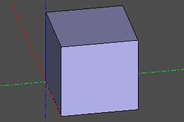
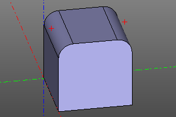
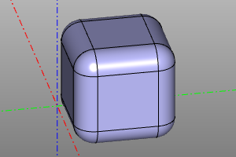
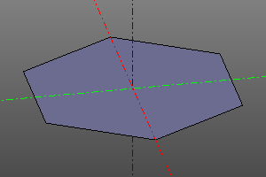
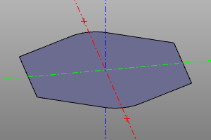
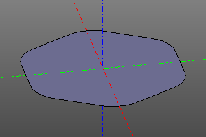
Chamfer
Операция взятия фаски тела. В отличие от скругления применяется только к объёмным телам.
Фаска задаётся расстоянием r, взятым от ребра до линии фаски и масивом ближайших точек refs. Если refs == None, выбранными считаются все элементы топологии.
TODO: несиметричная фаска.
chamfer(proto=model, r=radius, refs=referencedPoints)
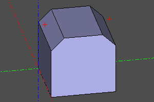
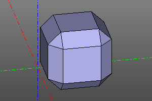
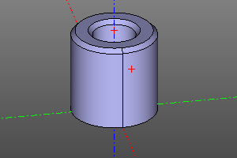
Thicksolid
Операция создания тонкостенного объёмного тела.
Задаётся прототипной моделью shp и массивом точек, ближайших к удаляемым граням refs.
Также задаётся толщина стенок t. Если толщина стенок положительная, стенки наращиваются наружу. Если отрицательная - внутрь.
thicksolid(proto=model, t=thickness, refs=referencedPoints)
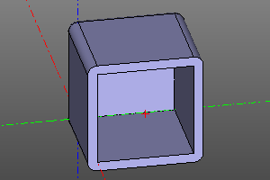 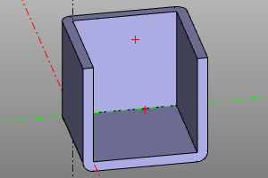